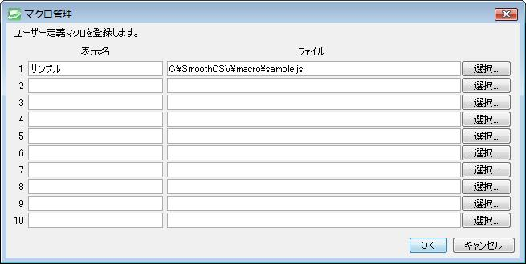

便利な機能
キーマクロ
キー操作を記憶し、マクロを自動生成することができます。
- メニューバーから「マクロ」＞「キー操作の記録／停止」を選択します。
- マウスのカーソル部分に「●REC」と表示されます。この間にSmoothCSV上で行ったキー操作が記録されます。
- 再度、メニューバーから「マクロ」＞「キー操作の記録／停止」を選択します。これでマクロの記録が停止します。
-
以上でマクロの作成が完了しました。作成したマクロは「マクロ」＞「再生」を選択することで再生できます。
また、記録したマクロの内容は「マクロ」＞「編集」を選択することで閲覧・編集することができます。」
ユーザー定義マクロ
作成したマクロをSmoothCSVに登録し、簡単に実行できるようにすることが可能です。ユーザー定義マクロは10個まで登録することができます。
＜登録方法＞
- メニューバーから「マクロ」＞「ユーザー定義マクロの管理」を選択します。マクロ管理ダイアログが表示されます。
-
「表示名」と「ファイル」を入力し、「OK」をクリックします。

-
登録したユーザー定義マクロはメニューバーに表示され、簡単に実行できるようになります。

-
以上でマクロの作成が完了しました。作成したマクロは「マクロ」＞「再生」を選択することで再生できます。
また、記録したマクロの内容は「マクロ」＞「編集」を選択することで閲覧・編集することができます。」